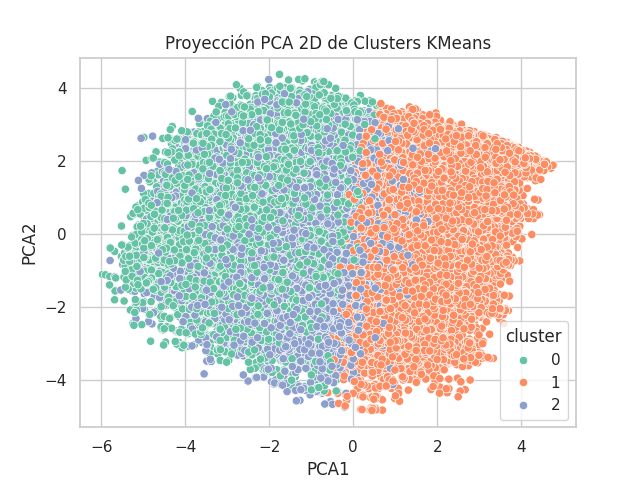

ID de Ejecución: 20251030_145838
Fecha de Reporte: 2025-10-30 15:23:25

| k | inertia | silhouette | calinski_harabasz | davies_bouldin |
|---|---|---|---|---|
| 2 | 1594425.105 | 0.138 | 15227.932 | 2.422 |
| 3 | 1477302.375 | 0.127 | 11929.679 | 2.420 |
| 4 | 1377393.469 | 0.109 | 10794.054 | 2.358 |
| 5 | 1310551.199 | 0.112 | 9702.378 | 2.181 |
| 6 | 1253065.725 | 0.111 | 8977.078 | 2.115 |
| 7 | 1217586.181 | 0.106 | 8153.586 | 2.255 |
| 8 | 1184082.001 | 0.099 | 7564.968 | 2.282 |

| Count | Percentage |
|---|---|
| 24942 | 0.266338 |
| 43116 | 0.460405 |
| 25590 | 0.273257 |
(Valores escalados (z-score) o des-escalados, según lo reportado por la función)
| num__Age | num__Flight Distance | num__Inflight wifi service | num__Departure/Arrival time convenient | num__Ease of Online booking | num__Gate location | num__Food and drink | num__Online boarding | num__Seat comfort | num__Inflight entertainment | num__On-board service | num__Leg room service | num__Baggage handling | num__Checkin service | num__Inflight service | num__Cleanliness | num__Departure Delay in Minutes | num__Arrival Delay in Minutes | cat__Gender_Female | cat__Gender_Male | cat__Customer Type_Loyal Customer | cat__Customer Type_disloyal Customer | cat__Type of Travel_Business travel | cat__Type of Travel_Personal Travel | cat__Class_Business | cat__Class_Eco | cat__Class_Eco Plus | |
|---|---|---|---|---|---|---|---|---|---|---|---|---|---|---|---|---|---|---|---|---|---|---|---|---|---|---|---|
| 0 | -0.466 | -0.352 | -0.274 | 0.011 | -0.198 | -0.033 | -1.007 | -0.739 | -1.143 | -1.017 | -0.054 | -0.076 | 0.118 | -0.090 | 0.132 | -1.104 | 0.005 | 0.030 | 0.456 | 0.544 | 0.674 | 0.326 | 0.526 | 0.474 | 0.260 | 0.648 | 0.091 |
| 1 | 0.152 | 0.270 | 0.250 | 0.078 | 0.190 | 0.034 | 0.434 | 0.431 | 0.546 | 0.742 | 0.575 | 0.452 | 0.539 | 0.260 | 0.549 | 0.537 | -0.014 | -0.049 | 0.506 | 0.494 | 0.879 | 0.121 | 0.793 | 0.207 | 0.703 | 0.254 | 0.043 |
| 2 | 0.198 | -0.111 | -0.154 | -0.142 | -0.126 | -0.026 | 0.252 | -0.005 | 0.196 | -0.257 | -0.916 | -0.688 | -1.023 | -0.350 | -1.054 | 0.172 | 0.020 | 0.053 | 0.562 | 0.438 | 0.848 | 0.152 | 0.644 | 0.356 | 0.367 | 0.544 | 0.090 |